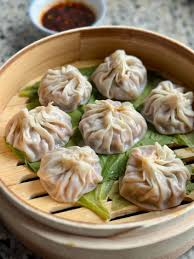

Home
Dumplings

An easy dumplings recipe that saves me lots of time.
This dish satisfies everyone in the family. Try it tonight!
Making perfect homemade dumplings doesn ' have to be tedious.
This top-rated easy dumplings recipe comes together quickly with a relatively short
ingredient list.
Ingredients
- 100 (3.5 inch square) wonton wrappers
- 1 ¾ pounds ground pork
- 1 tablespoon minced fresh ginger root
- 4 cloves garlic, minced
- 2 tablespoons thinly sliced green onion
- 4 tablespoons soy sauce
- 3 tablespoons sesame oil
- 1 egg, beaten
- 5 cups finely shredded Chinese cabbage
How to make it
- Combine pork, ginger, garlic, green onion, soy sauce, sesame oil,
egg and cabbage in a large bowl. Stir until well mixed.
- Place 1 heaping teaspoon of pork filling onto each wonton skin.
Moisten edges with water and fold edges over to form a triangle shape.
Roll edges slightly to seal in filling.
Set dumplings aside on a lightly floured surface until ready to cook.
- Arrange dumplings in a covered bamboo or metal steamer
so they don't touch to prevent them from sticking together;
steam until pork is cooked through, about 15 minutes.
- Serve hot and enjoy!